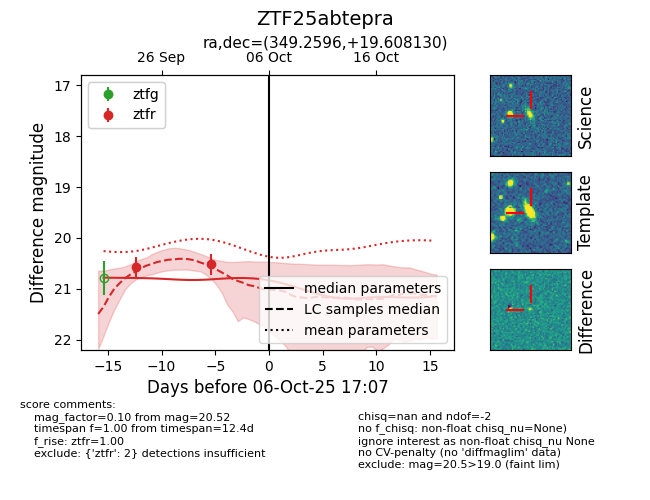
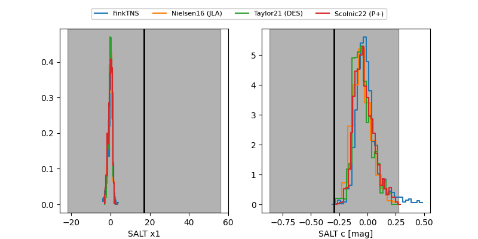

FINK: ZTF25abtepra
Lasair: ZTF25abtepra
ALeRCE: ZTF25abtepra
ZTF25abtepra (ztf,fink)
equatorial (ra, dec) = (349.2596,+19.60813)
galactic (l, b) = (94.3520,-37.96917)


last ztfr=20.52
2 ztfr detections